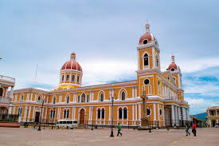
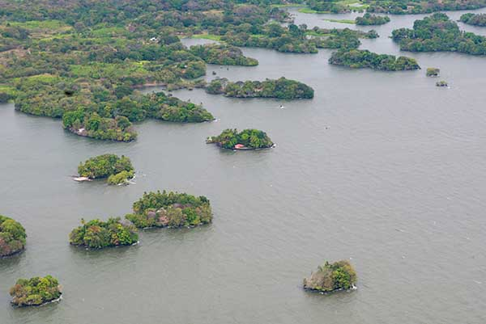
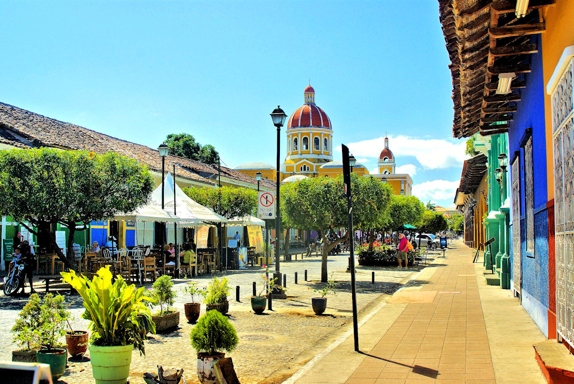

Granada es una de las ciudades coloniales más antiguas de América y uno de los destinos turísticos más importantes de Nicaragua gracias a su arquitectura, historia y belleza natural.

Es uno de los monumentos más emblemáticos y reconocidos de la ciudad.

Un conjunto de más de 300 pequeñas islas ubicadas en el lago Cocibolca.

Una de las calles más visitadas por turistas nacionales y extranjeros.